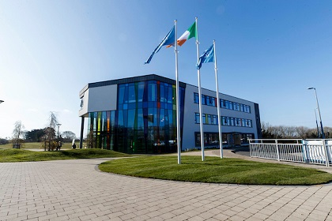

Why I started to study here and my experience?
I started a course 1 year ago supported by Springboard+, it was about CCNA and was provided by TU Dublin and when finished I decided to start this course to work in the IT sector in the future. The Campus is in a really beatiful place with lots of opportunities for activities but without car sometimes its difficult to get there in time... Luckily as a part-time student the lectures are almost fully online so besides some lab works we can study at home.
